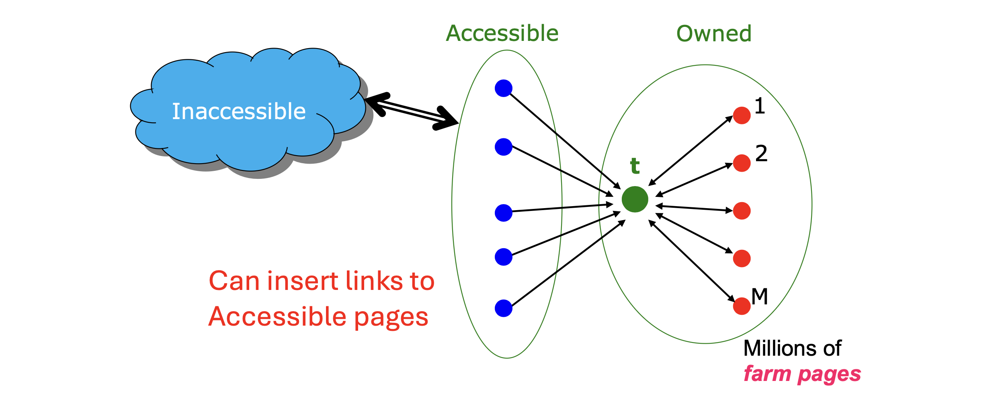
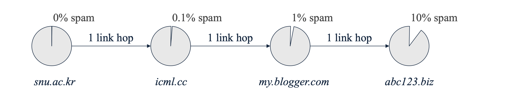
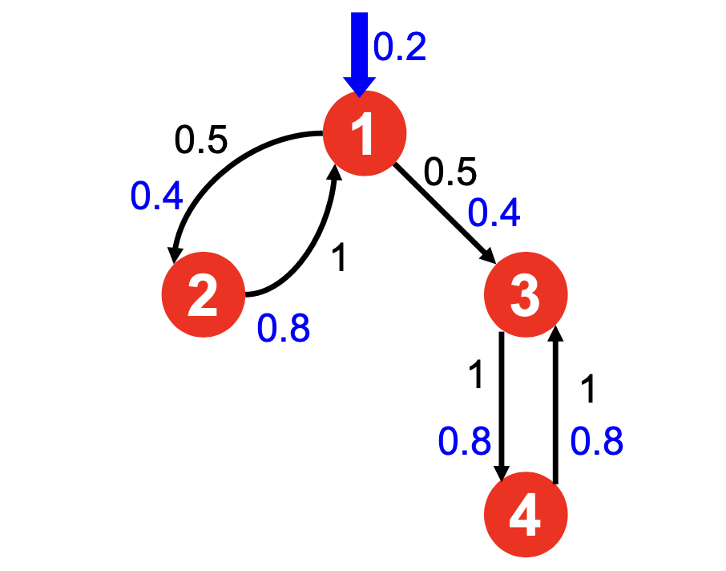
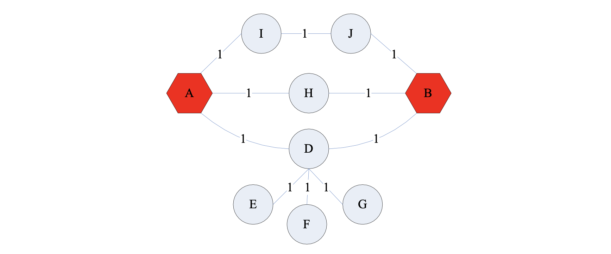
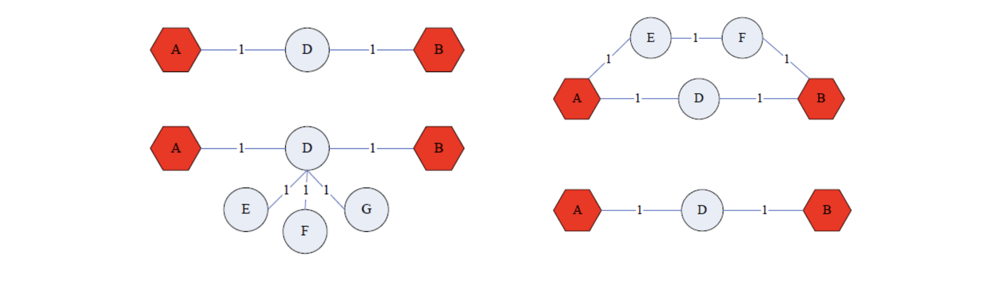
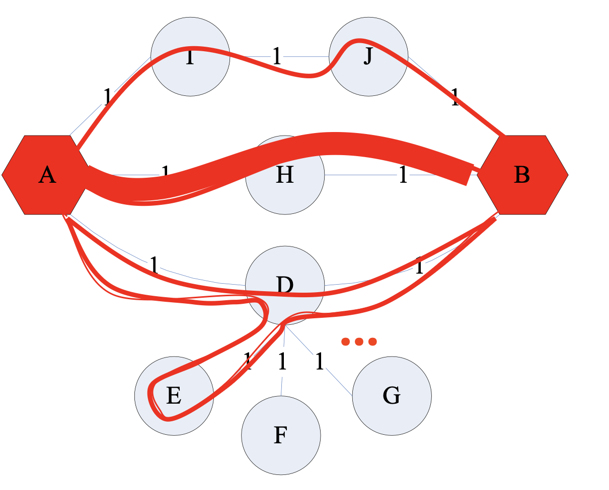

1. Introduction: PageRank의 취약점과 Link Spam
초기 검색 엔진의 성공을 이끈 핵심 알고리즘인 PageRank는 웹페이지의 중요도를 측정하는 강력한 도구입니다. 그러나 검색 결과 상단 노출의 가치가 커지면서, 스패머(Spammer)들은 인위적으로 PageRank 알고리즘을 속일 방법을 고안하기 시작했습니다.
가장 대표적인 공격 방식은 Link Spam입니다. 이는 특정 대상 페이지의 PageRank를 인위적으로 증폭시키기 위해 조작된 링크 구조를 생성하는 기법을 말합니다. 이러한 스팸 링크들을 위해 대규모로 조직된 페이지들의 군집을 Link Farm(링크 농장)이라고 부릅니다. 본 문서에서는 Link Farm의 수학적 원리를 분석하고, 이를 방어하기 위한 TrustRank 알고리즘과 네트워크 근접성을 측정하는 Topic-Specific PageRank를 다룹니다.
2. Link Farms: 스패머의 관점에서 본 웹의 구조
- 스패머의 궁극적인 목표는 단일 타겟 페이지(Target Page, \(t\))의 PageRank 점수를 극대화하는 것입니다. 이를 위해 스패머들은 전체 웹페이지를 통제 가능성에 따라 세 가지로 분류합니다.
- Owned Pages (소유 페이지): 스패머가 완전히 통제할 수 있는 페이지들입니다. 다수의 도메인에 걸쳐 봇(Bot)을 통해 수백만 개를 기계적으로 생성할 수 있습니다.
- Accessible Pages (접근 가능 페이지): 스패머가 소유하지는 않지만, 임의로 링크를 삽입할 수 있는 외부 페이지들입니다. 블로그나 뉴스 기사의 댓글, 위키피디아 등이 여기에 해당합니다.
- Inaccessible Pages (접근 불가 페이지): 웹의 절대다수를 차지하며, 스패머가 어떠한 임의 조작도 할 수 없는 일반적인 페이지들입니다.

- 위 그림과 같이 스패머는 Accessible 페이지에 스팸성 링크를 달아 타겟 페이지 \(t\)로 향하는 초기 트래픽을 확보합니다. 동시에 수백만 개의 Owned 페이지(1부터 M까지)를 생성하여 \(t\)와 상호 참조(양방향 링크)하도록 네트워크를 엮습니다 . 이 구조가 타겟 페이지의 점수를 어떻게 증폭시키는지 수식으로 확인해보겠습니다.
3. Mathematical Analysis of Link Farms
- Link Farm이 타겟 페이지 \(t\)의 점수에 미치는 영향을 엄밀하게 유도해 봅니다. 분석을 위해 다음과 같은 기호를 정의합니다.
- \(N \gg 0\): 전체 웹페이지의 총 개수.
- \(M > 0\): 스패머가 소유한(Owned) Farm 페이지의 총 개수.
- \(\beta\): Damping factor (랜덤 텔레포트 방지 계수).
- \(x\): Accessible 페이지들로부터 타겟 페이지 \(t\)로 유입되는 PageRank 기여분.
- \(y\): 타겟 페이지 \(t\)의 최종 PageRank 점수.
- \(z\): Owned 페이지들로부터 타겟 페이지 \(t\)로 유입되는 PageRank 기여분.
3.1. PageRank 공식의 설정
- 타겟 페이지 \(t\)의 PageRank 점수 \(y\)는 외부의 기여분(\(x\)), 자신이 통제하는 기여분(\(z\)), 그리고 무작위 텔레포트에 의한 고정 기여분으로 구성됩니다.
\[y = x + z + \frac{1-\beta}{N}\]
- 웹의 크기 \(N\)이 매우 크기 때문에, \(\frac{1-\beta}{N}\) 항은 0에 가까운 아주 작은 상수가 되어 계산 편의상 무시할 수 있습니다.
\[y \approx x + z\]
3.2. Owned Page의 PageRank 도출
- 각각의 Owned 페이지는 타겟 페이지 \(t\)로부터만 링크를 받도록 설계됩니다. 타겟 페이지 \(t\)는 \(M\)개의 Owned 페이지로 링크를 균등하게 나누어 줍니다. 따라서 개별 Owned 페이지의 점수는 \(t\)로부터 받는 \(\frac{\beta y}{M}\)에 기본 텔레포트 확률을 더한 값이 됩니다.
\[\text{PR}(\text{Owned}_i) = \frac{\beta y}{M} + \frac{1-\beta}{N}\]
3.3. 타겟 페이지 \(y\)의 최종 증폭률 유도
- 타겟 페이지 \(t\)는 \(M\)개의 Owned 페이지 모두로부터 온전하게 링크를 다시 돌려받습니다. 즉, 전체 Owned 페이지가 \(t\)에 기여하는 총합 \(z\)는 개별 Owned 페이지 점수에 \(\beta\)를 곱한 후 전체 개수 \(M\)을 곱한 것과 같습니다. 이를 \(y\) 방정식에 대입합니다.
\[y = x + \beta M \left[ \frac{\beta y}{M} + \frac{1-\beta}{N} \right]\]
- 이 식을 \(y\)에 대해 전개하여 풀면 다음과 같습니다.
\[y - \beta^2 y = x + \frac{\beta M (1-\beta)}{N}\] \[y(1 - \beta^2) = x + \frac{\beta M (1-\beta)}{N}\]
- 양변을 \((1 - \beta^2)\)으로 나눕니다. 합차 공식 \((1-\beta^2) = (1-\beta)(1+\beta)\)를 적용하여 분모분자를 약분하면 최종적인 \(y\)의 공식을 얻을 수 있습니다.
\[y = \frac{x}{1-\beta^2} + \frac{\beta M}{(1+\beta)N}\]
3.4. 분석 결과와 시사점
- Google 시스템의 일반적인 \(\beta = 0.85\)를 위 식에 대입해 보겠습니다.
- \((1-0.85^2) \approx 0.2775\) 이고, \(1 / 0.2775 \approx 3.6\)입니다.
- \(\beta / (1+\beta) = 0.85 / 1.85 \approx 0.46\)이 됩니다.
\[y = 3.6x + \frac{0.46}{N}M\]
- 이 공식의 결론은 치명적입니다. 스패머는 외부의 유효한 트래픽 \(x\)를 3.6배 증폭시킬 수 있습니다. 더 나아가, 상수로 취급되는 \(\beta\)와 \(N\)은 통제할 수 없지만, 봇(Bots)을 이용해 만들어내는 농장 페이지의 수 \(M\)은 원하는 만큼 기하급수적으로 늘릴 수 있습니다. 따라서 \(M\)의 증가만으로 타겟 페이지의 점수를 무한히 끌어올릴 수 있다는 결론에 도달합니다.
4. TrustRank: 스팸 방어 알고리즘
- Link Farm에 의한 PageRank 조작을 방어하기 위해 TrustRank라는 알고리즘이 제안되었습니다. TrustRank는 균등한 무작위 텔레포트(Uniform Teleportation)라는 기존 PageRank의 맹점을 역이용합니다.
4.1. 기본 가정과 원리
- Assumption (가정): “신뢰할 수 있는(Trustworthy) 페이지는 스팸 페이지로 링크를 걸지 않을 것이다”.
- Mechanism: 랜덤 워크 시 텔레포트를 할 때, 모든 웹페이지가 아닌 사전에 정의된 신뢰할 수 있는 텔레포트 집합(Teleport set, \(S\))으로만 이동하도록 무작위성을 편향시킵니다.
4.2. Teleport Set \(S\)의 구축
- 신뢰도 높은 집합 \(S\)를 구축하기 위한 대표적인 접근 방식은 다음 두 가지입니다.
- Human Evaluation: 기존 PageRank 점수가 높은 최상위 페이지들을 사람이 직접 검수하여 신뢰 가능한 화이트리스트를 구성합니다.
- Domain Membership: 임의 발급이 불가능하고 통제되는 특수 도메인(예:
.edu,.gov,.ac.kr등)을 \(S\) 집합으로 지정합니다.
- Domain Membership: 임의 발급이 불가능하고 통제되는 특수 도메인(예:

- 위 다이어그램에서 보듯, 신뢰할 수 있는 시드(Seed) 노드로부터 링크를 타고 이동하는 거리(Hop)가 길어질수록, 해당 페이지가 스팸일 확률은 기하급수적으로 높아집니다 .
4.3. Matrix Formulation (행렬 수학 공식)
- 일반 PageRank 행렬의 텔레포트 항을 수정하여 TrustRank 전이 행렬 \(A\)를 다음과 같이 정의합니다.
\[ A_{ij} = \begin{cases} \beta M_{ij} + \frac{1-\beta}{|S|} & \text{if } i \in S \\ \beta M_{ij} & \text{otherwise} \end{cases} \]
- 여기서 \(M_{ij}\)는 노드 \(j\)에서 노드 \(i\)로 향하는 링크의 역수 확률 행렬입니다. 이 변형 행렬 역시 각 열의 합이 1을 유지하므로 마르코프 체인의 성질이 유지되며, 집합 \(S\) 내의 페이지마다 서로 다른 가중치를 부여할 수도 있습니다.

- 예를 들어, \(\beta=0.8\) 이고 \(S=\{1\}\) 일 때 , 지속적으로 반복 연산을 수행하면 네트워크 전체로 TrustRank 점수가 전파되며, in-link가 없거나 적더라도 집합 \(S\)에 포함되거나 인접한 노드들은 최종적으로 매우 높은 안정 상태(Stable) 점수를 확보하게 됩니다.
5. Topic-Specific PageRank & Random Walk with Restarts (RWR)
- TrustRank는 본질적으로 특정한 목적(스팸 필터링)을 위해 텔레포트 대상을 편향시킨 Topic-Specific PageRank의 한 형태입니다 . 이를 일반화하면 다양한 형태의 네트워크 근접성 측정 모델로 확장할 수 있습니다.
5.1. 네트워크에서 근접성(Proximity) 평가의 어려움
- 네트워크 노드 \(A\)와 \(B\)가 얼마나 가까운지(Proximity)를 평가한다고 해봅시다.

- 일반적으로 최단 경로(Shortest path)를 떠올리기 쉽지만, 이는 복잡한 그래프 환경에서 좋은 지표가 되지 못합니다.

- 말단 노드 무시: 차수(Degree)가 1인 노드(E, F, G)들이 추가되더라도 최단 경로는 이를 계산에 넣지 못합니다. 위 그래프처럼 D에 주변부 노드가 많이 붙어있을수록, 랜덤 탐색에서는 D에 갇힐 확률이 높아져 실질적으로 \(A\)와 \(B\)의 거리는 멀어지지만, 최단 경로 공식은 이를 포착하지 못합니다.
- 다중 관계(Multi-faceted relationships) 무시: 노드 사이를 잇는 다양한 우회로나 복수 연결 다발이 가지는 응집력을 최단 거리는 단순히 ’하나의 경로’로 취급해버립니다.
5.2. Random Walk with Restarts (RWR)
- 최단 경로의 단점을 보완하고 진정한 형태의 근접성을 도출해내는 해법이 바로 Random Walk with Restarts (재시작이 있는 랜덤 워크), 또는 Personalized PageRank (PPR)입니다 .

- RWR의 동작 원리는 텔레포트 범위를 단일한 “기준 노드” 하나로 고정하는 것입니다.
- 질의 노드가 \(A\)라면, 텔레포트 집합을 \(S=\{A\}\) 하나로 설정합니다.
- 무작위 이동을 진행하다 텔레포트가 발동되면, 언제 어디서든 무조건 다시 노드 \(A\)로 돌아와(Restart) 탐색을 시작합니다.
- 수없이 탐색을 반복하여 도출된 수렴 점수 \(r_j\)는, 네트워크의 모든 간선 확률과 우회로, 주변부 노드 분산 구조 등을 모두 반영한 종합적인 \(A\)와의 Proximity(근접성) 점수가 됩니다.
- 이 알고리즘은 추천 시스템(Recommendation System) 등에서 개별 사용자의 위치(Node)를 기준으로 개인화된(Personalized) 정보를 검색하고 제공하는 핵심 기술로 활용됩니다.